2020
VISION 2020
Googla "FFWPU Vision 2020"
jan 2020 Världen:
Utbrott av dödligt corona-virus i Kina (Wuhan) (dec 2019) sprider panik över hela
världen.- 600 döda i feb.
över 2000 i början av mars
10 mars - hela Italien i karantän!
2 böcker som förutspådde 2020 coronavirus utbrott 12 år (2008) och 40 år tidigare. -
länk
Citat sid. 312
"Omkring är 2020 kommer en mycket svår andningsliknande sjukdom att spridas över världen,
attackerande lungor och luftrören och motstå all traditionell behandling.
Ännu märkligare än att sjukdomen uppstod blir det faktum att den kommer att försvinna
lika snabbt som den uppstod.
Uppstå igen 10 år senare (2030) och därefter fullständigt försvinna."
Vart 100:e år verkar en pandemi (global virusepedimi) bryta ut;
1720 - Marseille Frankrike
1820 - kolera startade i Indien
1920 - spanska influensan, 50-100 miljoner dödligaste virussjukdomen hittills
2020 - Corona-virus, startade i Wuhan Kina. Ca 6 miljoner döda (2022)
6 feb USA:s president Trump telegram-gratulerar paret Moon på deras födelsedag.
7 feb Stor
Välsignelse i Syd-Korea; 6000 par.
Foton
Världen: mars 2020 - 1/3 av världens befolkning i obligatorisk "inlåsning", hemma för att hindra smittspridning - världsunikt! - 3,8 miljoner smittade - tyvärr 265 000 döda - 1,3 miljoner friska igen
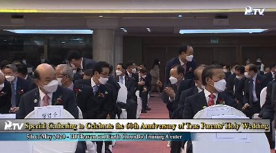 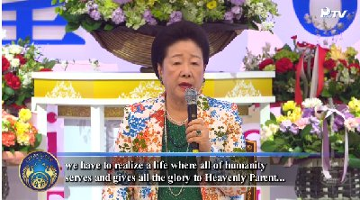april Pastoral Training Webinar med William Haines
14 april startar Joanna Hartl i London en zoom-grupp för HonDokHae.
Våren 2022 (nu 2026 ännu igång) är vi fortfarande igång; London, Nederländerna,
Finland, Estland träffas varje morgon månd-fred.
8 maj firar vi Sanna föräldrars 60-ärs diamantbröllop
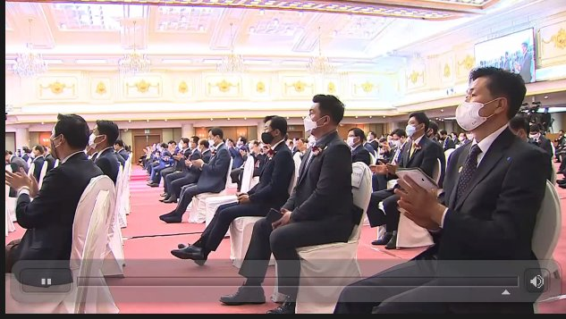
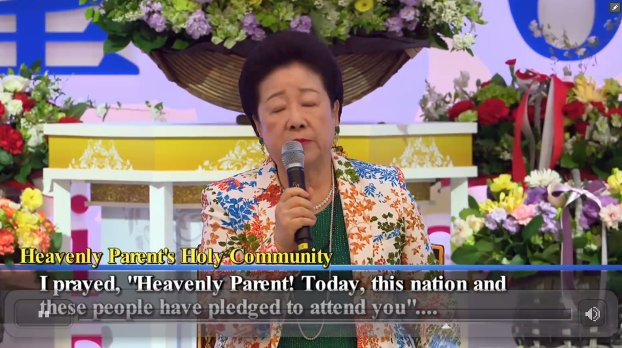
Sanna mor tillkännager vårt nya kyrkonamn "Himmelska Förälders heliga gemenskap -
The Heavenly Parents Holy Community"
Alla Heliga dagar kommer från och med nu att firas 16:e dagen i 3:e månaden varje år.
Ett nytt "Cheon Il tempel" skall stå färdigt 2023
1/3 av världens befolkning skall återupprättas under Sanna mors livstid.
är 2020 Zoom-möten pågår över hela världen på internet. Söndagsgudstjänster, morgon-HDH allt via nätet och appen Zoom.
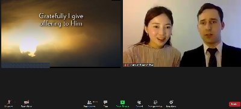 Sunday Service
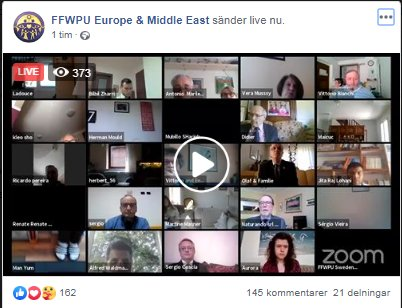 över hela Europa och Mellanöstern
17 maj 2020 - 1373 deltagare.
Under hösten varje onsdag kl 20 CET - EUME (Europe & Middle East) Prayer Call - bönemöte och rapportering av Mike & Fumiko Balcomb
25 juni 1950 - Koreakriget bryter ut
Svenska-röda-korset-sjukhuset-i-Korea, en akademisk uppsats av Sigfrid Su-gun Östberg
juni Zoom-webinar med William Haines
Joining the dots
fb-group
Juli - 15 Day DP WS online - Fuchs, Crosthwaite, Gali, BalcombVideofiles
juli Zoom-webinar med William Haines En snabb uppskattning av antalet Nordiska medlemmar i juni 2020 visar ungefär; juli 2020 - Annons på bussar i Korea: Fredens Moder (Hak Ja Han),
torkar bort människans tårar 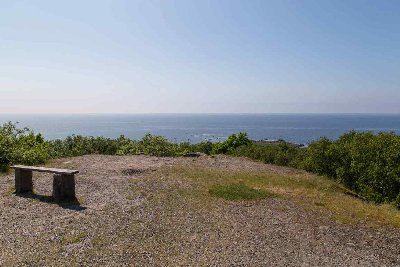 9 aug 2020 1:a Rally of Hope
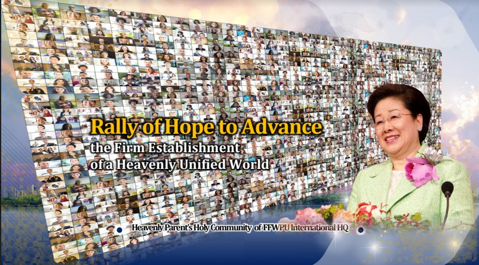
6 Sept 2020 Gemensam europa söndags-gudstjänst - fb;1753 zoom;1000 deltagare 27 sept 2020 2:a Rally of Hope 21-29 sept Zoom-webinar med William Haines Reading Life through the Principle 27 sept Nytt återkommande Zoom-Peace stormöte med Sanna mor I oktober välsignade Sanna Mor oss genom att ändra namnet till Cheongshimwon
(kan inofficiellt översättas som "Kärlekens och hjärtats trädgård") -
det andliga centret för HJ Heaven and Earth Cheonbo Training Center
i Cheongpyeong, Korea - ändrades till Cheonshimwon
(inofficiellt, "Det himmelska hjärtats trädgård") CheonBo won = Blessing of those who fulfilled 430 Couples 8 maj 2020 Andliga högkvarteret för Himmelska förälderns heliga gemenskap -
The Spiritual Headquarter for Heavenly Parents Holy Community. /Sanna mor/HakJaHan juni 2020 uppmanades Giseon Lee att starta nattbönemöten för att omfamna hela värden
i Himmelska förälderns heliga gemenskap 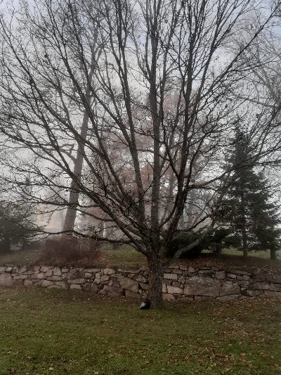
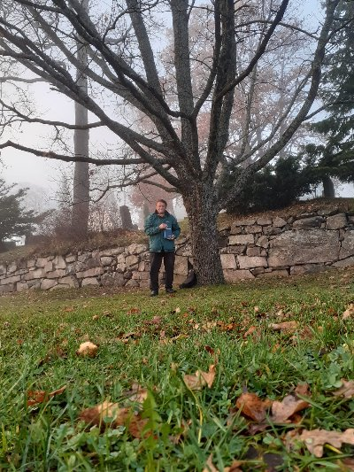
22 nov 3:e Global Peace Rally i Korea + internet. 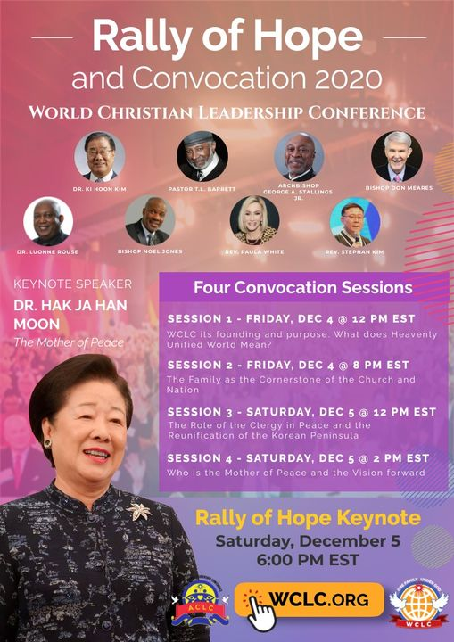 dec 2020 Dr Yong encourage every family to create Online Heavenly Community
with 43 people. Världen: Totalt har över 2 miljoner människor i världen har nu dött i covid-19.
The Life and teachings of Jesus
Link
Finland
52 1:a gen.
86 2:a gen.
4 3:e gen.
Sverige
49 1:a gen.
87 2:a gen.
18 3:e gen.
Sann fred börjar (exakt) från mig själv
Vi skapar en Holy ground på utsiktsplatsen Skallen i Haverdal Halland.
koordinater 56°43'29.7"N 12°38'46.8"E (använd Googlemaps)

Zoom-Rally med Sanna mor - 200 miljoner deltagare

Nov 2020
CheonBo Sverige 2020 (foto: upphovsrätt gäller)
on Earth and in Spiritual world
CheonBo = Heavenly Treasure - Ancestor Liberation & Blessing
10 nov 2020 Ny Holy ground skapad i Kyrkslätt Finland
Coordinates: 60.1233948,24.4355679,17
5 dec 4:e Global Peace Rally i Las Vegas USA + internet.
Talet

Med önskemål om en lycklig hundraårsdag och god jul till alla våra grannar i Oslo
från vårt UPF-kontors utställningsfönster. CHEONBO EVENT DEC 12 2020, FFWPU HQ, Köpenhamn, Danmark;
CHEONBO EVENT DEC 12 2020, FFWPU HQ, Köpenhamn, Danmark;
Förra lördagen var vår första gång att hålla CheonBo-evenemang i Danmark.
Vi bestämde oss för att gå vidare med evenemanget trots Coronasituationen,
eftersom de danska begränsningarna gör det möjligt för trossamhällen
att ha religiösa evenemang med mer än 10 deltagare.
Vi var 15 deltagare med ansiktsmasker, ingen sång och håll
socialt avstånd. Det var verkligen en upplyftande upplevelse,
att känna oss förenade med "Hjärtats hemland" på
ett sätt som vi aldrig förut har upplevt.